La saga Pokémon dio comienzo con la primera generación, que abarca los primeros videojuegos. Pokémon Rojo y Pokémon Verde fueron lanzados el 27 de febrero de 1996 exclusivamente en Japón para la consola Game Boy, desarrollados por GameFreak, desarrolladora principal de la saga a lo largo de la historia, y publicados por Nintendo. Desde entonces, esta saga se ha convertido en una de las caras principales de la empresa, siendo mundialmente reconocida
Unos meses más tarde, el 15 de octubre de 1996, se lanzó en Japón la versión Pokémon Azul, que sería la encargada de acompañar a Pokémon Rojo cuando se lanzó en otras partes del mundo, saliendo el 30 de septiembre de 1998 en Estados Unidos, el 23 de octubre de 1998 en Australia, el 5 de octubre de 1999 en Reino Unido y llegando a España en noviembre de 1999, viéndose por primera vez la saga fuera de su país de origen.
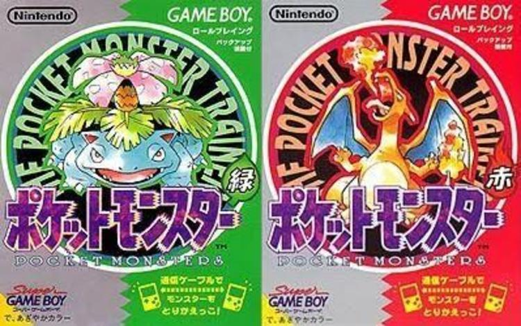
Portadas originales de Pokémon Rojo y Pokémon Verde
Hay que tener en cuenta que Pokémon Azul no es simplemente un renombrado de Pokémon Verde, sino una edición especial con algunas mejoras gráficas y nuevos diálogos.
El 12 de septiembre de 1998 apareció una nueva versión, Pokémon Amarillo, una versión especial algo más relacionada con la serie anime de Pokémon que también se estrenó, en el que recibimos a la que sería la mascota de la saga a partir de ese momento, Pikachu. También presenta algunas referencias a la serie y varias diferencias como mejoras gráficas, algunos Pokémon disponibles o nuevos sprites para los Pokémon. Esta versión tiene remakes de séptima generación, Pokémon: Let's Go, Pikachu! y Pokémon: Let's Go, Eevee!
En cuanto a la serie anime, iniciada el 1 de abril de 1997, tanto las dos primeras temporadas como las dos primeras películas pertenecen a esta generación, presentando personajes icónicos como Ash, su compañero Pikachu y el Team Rocket, y algunos personajes presentes en los videojuegos, como el Profesor Oak, Brock o Misty.
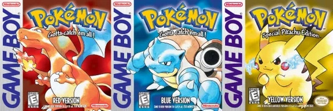
Portadas mundiales de Pokémon Rojo, Pokémon Azul y Pokémon Amarillo
Al ser los primeros videojuegos de la franquicia, estos títulos sientan las bases de la saga con las mecánicas fundamentales. Se trata de videojuegos de rol con combates por turnos, en los que los entrenadores combaten mano a mano con sus Pokémon, eligiendo los movimientos estratégicamente para vencer a los oponentes. Podemos considerar como novedades:
151 Pokémon fueron parte de los primeros juegos. Incluyen algunas de las criaturas más icónicas de la saga (Pikachu, Eevee, Snorlax, Lapras, Mewtwo o los primeros starters). El primer Pokémon de esta generación es Bulbasaur, uno de los starters, y el último es el Pokémon Legendario Mew.
Starters de Kanto
Bulbasaur
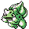
Charmander
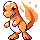
Squirtle
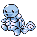
La región de Kanto, inspirada en la región real de Kanto, en Japón, es donde se ambientan los juegos. Ofrece una serie de pueblos y ciudades conectadas mediante rutas que el entrenador recorre, enfrentándose a otros entrenadores o Pokémon salvajes mientras forma su equipo, y combatiendo en los gimnasios de las ciudades.
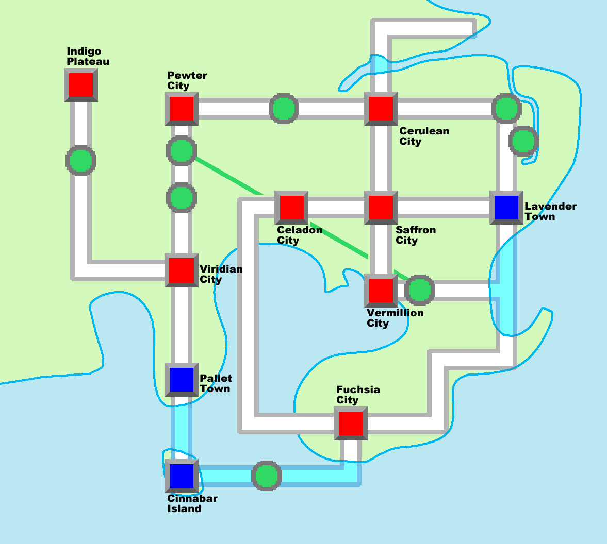
Mapa de Kanto
En las ciudades encontramos varios puntos de interés, como Centros Pokémon, donde curar a nuestro equipo y tratar con el PC, el sistema donde se guardan los Pokémon de nuestro equipo que no llevamos encima; o Tiendas Pokémon, donde podemos encontrar diversos objetos.
Los objetos tienen propósitos diversos. Algunos de los más importantes son las Pokéballs, que permiten capturar Pokémon salvajes, y existen varios tipos con distinto ratio de captura; objetos curativos como las pociones, restauración de estados o revivir. Otros objetos incluyen modificaciones temporales de estadísticas, repelentes, objetos comerciales, entre otros.
Un sistema de combate por turnos enfocado en la estrategia, con factores diversos como los tipos de los Pokémon con sus fortalezas, debilidades e inmunidades, los niveles, las estadísticas, estados, ataques físicos y especiales, movimientos de modificación de estadísticas y objetos de todo tipo.
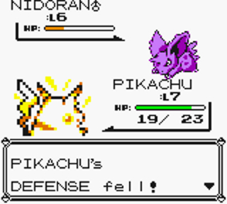
Combate en Pokémon Amarillo
Un sistema de evolución. Algunos Pokémon pertenecen a líneas evolutivas, y van adquiriendo nuevas formas, generalmente subiendo de nivel, aunque también existen otros métodos como la evolución por objetos.
Máquinas Ocultas (MOs), que permiten enseñar movimientos a Pokémon que tienen utilidades más allá del combate, por ejemplo para superar obstáculos, viajar por el agua o volar hasta un punto del mapa.
Historia
La historia de los primeros juegos de Pokémon nos pone en la piel de un joven entrenador de Pueblo Paleta llamado Red (aunque el jugador puede elegir el nombre que quiera). Inicia su viaje con el objetivo de convertirse en maestro Pokémon, y para ello obtiene un primer Pokémon de manos del Profesor Oak, del que también obtiene una Pokédex, un dispositivo para registrar información de todos los Pokémon existentes. El nieto del profesor es nuestro rival principal, Blue, con el mismo objetivo que el jugador.
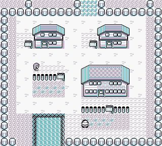
Pueblo Paleta
Tras iniciar su viaje, el jugador debe recorrer las rutas haciéndose más fuerte y formando su equipo Pokémon para poder vencer en los gimnasios de las ciudades, en los que gana medallas, ya que es necesario reunir todas las 8 medallas de gimnasio para entrar en la Liga Añil. Cada gimnasio está especializado en un tipo de Pokémon, y en ellos debemos derrotar a los entrenadores que encontremos hasta llegar al líder, y al vencerlo obtendremos la medalla.
Durante su viaje también se encuentra con una organización criminal, el Team Rocket, que se dedica a hacer el mal con los Pokémon, robando especies y comerciando con ellas entre otros actos. El líder de la organización, Giovanni, es también el líder del último gimnasio, y al derrotarle la organización queda disuelta.
Una vez se alcanza la Liga Pokémon y tras pasar por la Calle Victoria se debe vencer al Alto Mando, una serie de 4 entrenadores muy poderosos. Al derrotarlos se llega al campeón de la liga, el último reto, que no es otro que nuestro rival Blue. Tras vencerle, el jugador se corona como maestro de la liga Pokémon, cumpliendo su objetivo.
Otros juegos
La primera generación de Pokémon también comprende algunos títulos alejados de la línea principal, también apartados del género RPG característico de la saga para explorar otros géneros diferentes.
Pokémon Stadium
Pokémon Stadium fue un videojuego de combates lanzado el 1 de agosto de 1998, exclusivamente en Japón, que nunca salió en el resto del mundo. Es el primer videojuego de la franquicia presente en la consola Nintendo 64, y presenta un estilo gráfico en 3D.
Este juego se centra en los combates con equipos de 6 Pokémon, pudiendo luchar contra entrenadores con equipos preconfigurados. A pesar de ser un juego de primera generación, solo están presentes 42 de los 151 Pokémon existentes
Existe la opción de traspasar los Pokémon desde una partida de un cartucho de los juegos de Game Boy para usarlos en este. Los modos de juego incluyen el Combate Libre, el Modo Torneo, el Combate Game Boy y una Pokédex en la que se pueden ver los datos de los Pokémon del cartucho que se esté usando.
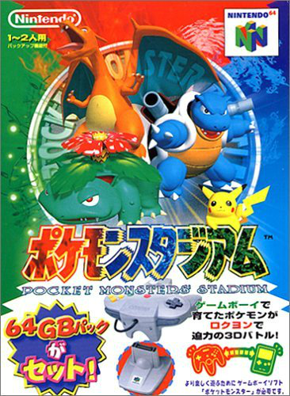
Pokémon Stadium 2
Titulado Pokémon Stadium en el resto del mundo y Pokémon Stadium 2 en Japón, fue un videojuego de combates lanzado el 30 de abril de 1999, también para la Nintendo 64. Al igual que su predecesor solo presente en Japón, se centra en las peleas entre Pokémon, con gráficos en 3D característicos de la consola.
Algunos de los modos que incluye son "Lucha ahora", en el que se le da al jugador un equipo de 6 Pokémon, de los que debe elegir 3 para luchar y debilitar al equipo rival. En el modo Estadio, el modo principal del juego, hay una serie de copas con reglas específicas que se debem vencer. Otro de los modos principales es el Castillo del Gim. Líder, en el que debemos derrotar a los líderes de los gimnasios de los juegos originales de Game Boy.
A diferencia de su predecesor, en este juego sí están presentes los 151 Pokémon existentes en ese momento.
El juego presenta un apartado "Kids Club", con diversos minijuegos de todo tipo en los que pueden participar hasta 4 jugadores.
Pokémon Snap
Pokémon Snap es un videojuego de Nintendo 64 con el objetivo de fotografiar a todos los Pokémon. Fue lanzado el 21 de marzo de 1999 en Japón, el 30 de junio en América, y en el año 2000 llegó tanto a Europa como a Australia.
En este juego controlamos al fotógrafo Todd Snap, que es llamado por el Profesor Oak a una isla para obtener fotografías con las que completar sus informes científicos. El jugador debe superar 7 fases sacando fotografías que serán valoradas según su calidad, tomando en cuenta aspectos como el tamaño, la pose del Pokémon o la cantidad de criaturas presentes
El sistema de juego es similar a un shooter sobre raíles, con un camino guiado. Durante el camino podemos tomar hasta 60 fotografías, y al finalizar se deben elegir las mejores para presentar
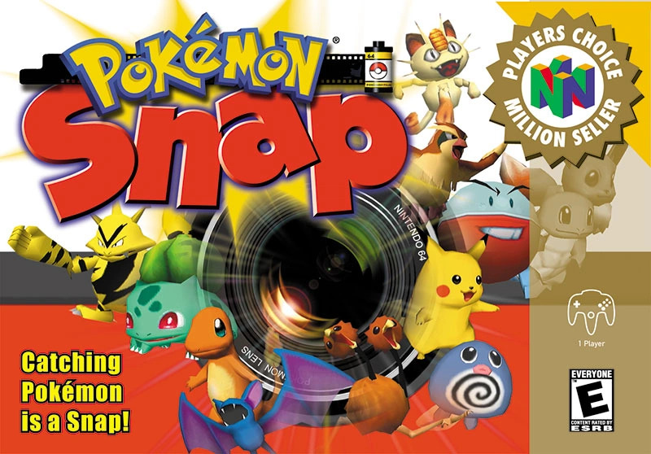
Hey You, Pikachu!
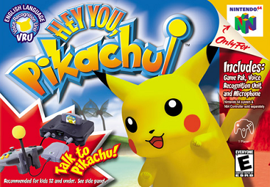
Hey You, Pikachu! es un videojuego de Nintendo 64 en el que te puedes comunicar con la mascota Pikachu, lanzado el 12 de diciembre de 1998 en Japón, y el 5 de noviembre del año 2000 en América.
Mediante el micrófono de la consola y el reconocimiento de voz, el jugador puede dar órdenes a Pikachu, también debiendo alimentarle y cuidarle; en caso contrario desobedecerá las órdenes.
En cuanto a la historia del juego, el Profesor Oak otorga al personaje principal un nuevo dispositivo que permite hablar con Pokémon, y este lo prueba con un Pikachu que, tras ganarse su confianza, comienza a vivir en su casa. Tras 365 días, el profesor Oak aparece, considerando que se debe liberar a Pikachu. Tras ello se alcanzan los créditos, y cuando terminan Pikachu regresa.
Pokémon Trading Card Game
Pokémon Trading Card Game es el primer videojuego de cartas coleccionables de la saga, disponible para Game Boy Color, estrenado el 18 de diciembre de 1998 en Japón, y en el año 2000 en el resto del mundo.
Las reglas siguen las del juego original de cartas de Pokémon, con elementos como energías, ataques, evoluciones y retiradas, consistiendo en combates por turnos con las cartas.
La historia del juego se centra en la isla TCG, donde hay 8 clubes de cartas. El protagonista, Marco, acude al laboratio del profesor Mayo para obtener un mazo de cartas y comenzar su aventura, en la que debe derrotar a los 8 líderes de los clubes para enfrentarse a los grandes maestros.
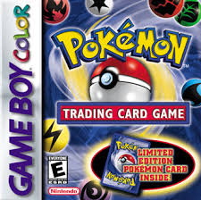
Otros títulos spin-off de esta generación son Pokémon Puzzle League y Pokémon Pinball.


 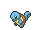
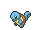